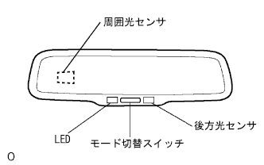

Inner Rear View Mirror Assembly On-vehicle Inspection |
| 1. Inspect Inner Rear View Mirror Assembly (Inner Mirror EC Mirror) |
Turn IG ON.
Under the above conditions, check that the mirror enters AUTO mode, the indicator light comes on and the mirror is in the DAY state.
 |
Check that pressing the mode selector switch below the mirror surface switches the mirror reflection state from AUTO mode → DAY mode.
With the mirror in the AUTO DAY state, cover the ambient light sensor (back side) with your hand and shine a fluorescent light etc. on the rear light sensor, and check that the mirror reflection state switches from DAY → NIGHT; then remove your hand and turn off the light, and check that the mirror reflection state switches from NIGHT → DAY.